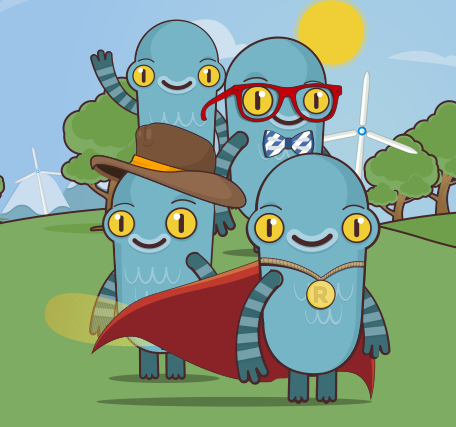
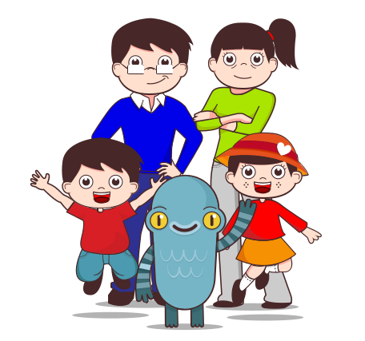
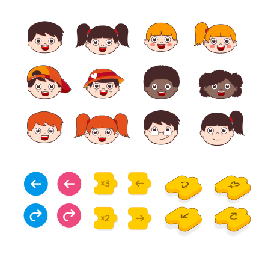

Kids Code
TFM en Diseño Web
Proyecto realizado en BAU.
El proyecto Kids Code, formado por Eva, Paco, Silvia y Juanlu (servidor), consite
en enseñar a niños la lógica de la programación, a través del juego y la experiencia familiar.
La idea es que den sus primeros pasos en nuestra plataforma, con un aprendizaje basado en el
"Computational Thinking" de forma iterativa e incremental.



